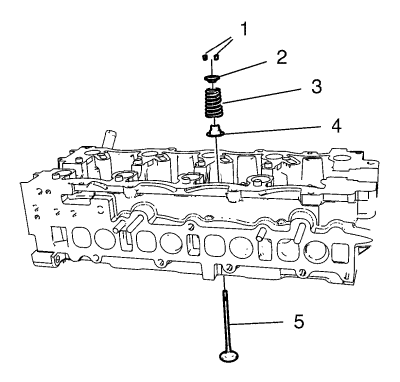
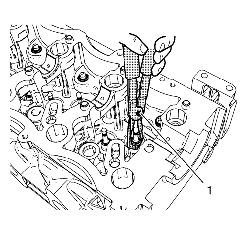
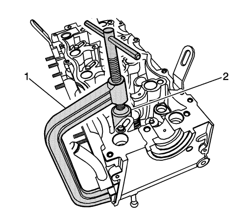

Montaje de la culata
Herramientas especiales
| • | EN-49074 Compresor de muelles de válvula |
| • | EN-48247 Adaptador de compresión de muelles de válvula |
| • | EN-46116 Herramienta de desmontaje y montaje de la junta de vástago de válvula |
Si desea informarse sobre herramientas regionales equivalentes, consultar Herramientas especiales .

Nota:
| • | Si las válvulas se han usado con un motor en marcha, debe limpiar los asientos de válvula antes de volverlos a montar. |
| • | Cubra los vástagos de válvula con aceite de motor nuevo. |
| • | Asegúrese de no dañar las guías de válvula. |
- Monte las 16 válvulas (5).

- Monte 16 retenes de vástago de válvula nuevos con la herramienta de montaje EN-46116 (1).
- Monte los 16 muelles de válvula (3).
- Monte los 16 anillos de seguridad del muelle de la válvula (2).

Advertencia: Los muelles de la válvula comprimida tienen una gran tensión contra el compresor del muelle de la válvula. Los muelles de la válvula que no estén comprimidos o liberados correctamente por el compresor del muelle de la válvula se pueden expulsar del compresor aplicando mucha fuerza. Tenga cuidado al comprimir o soltar el muelle de la válvula con el compresor del muelle de la válvula y al desmontar o montar las llaves del vástago de válvula. Si no se tiene cuidado, se podrán producir lesiones físicas.
- Monte el compresor EN-49074 con el adaptador EN-48247.
- Monte las 32 chavetas de vástago de válvula (1).
| © Copyright Chevrolet. Reservados todos los derechos |